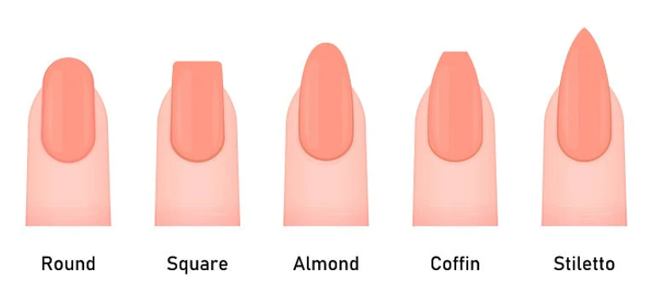
Image from SNS Nails
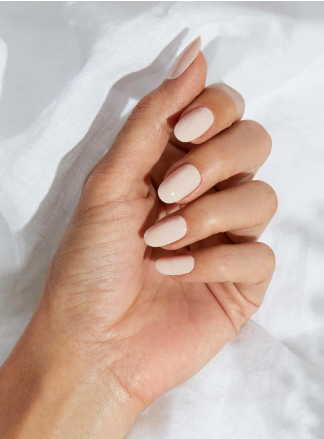
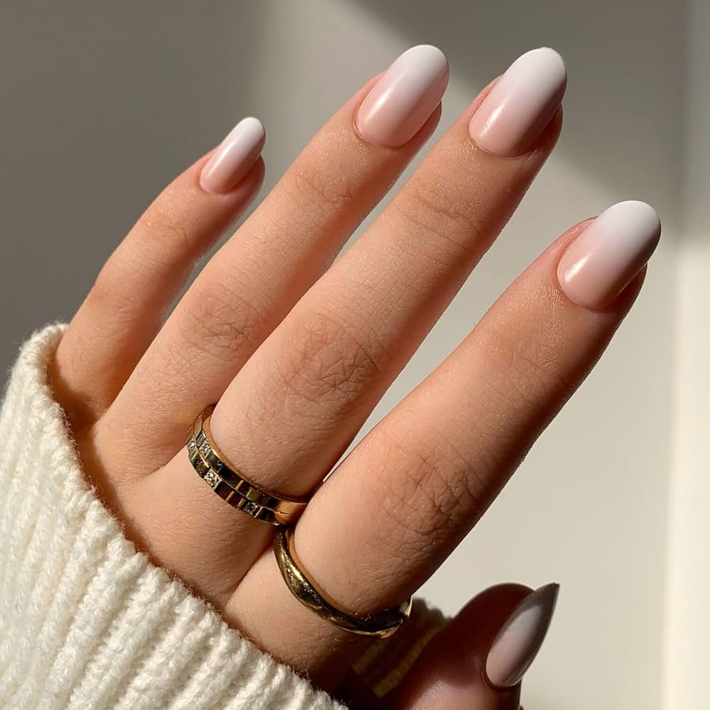
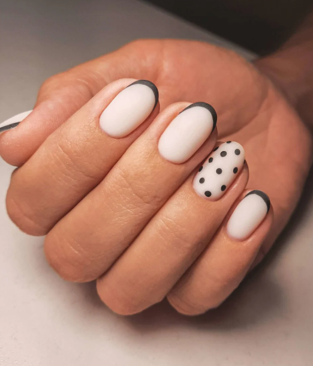
A round nail shape follows the natural curve of the fingertip and offers strong durability.
Best for: short fingers or wide nail beds.
Well suited for: healthcare workers, lab technicians, and hands‑on professionals.
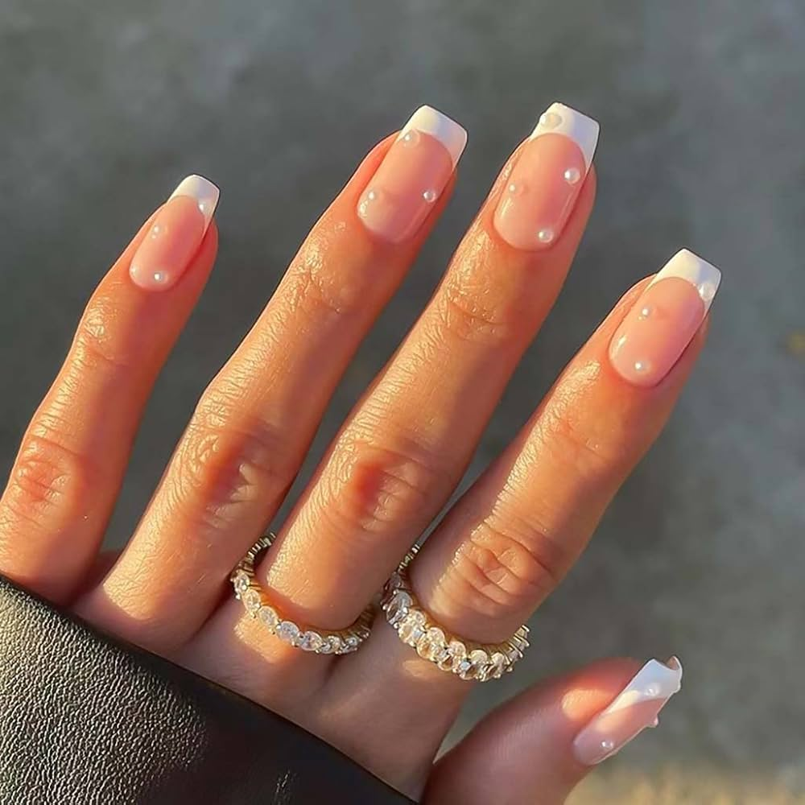
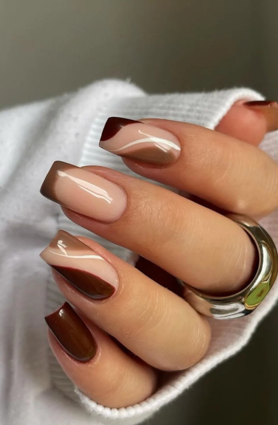
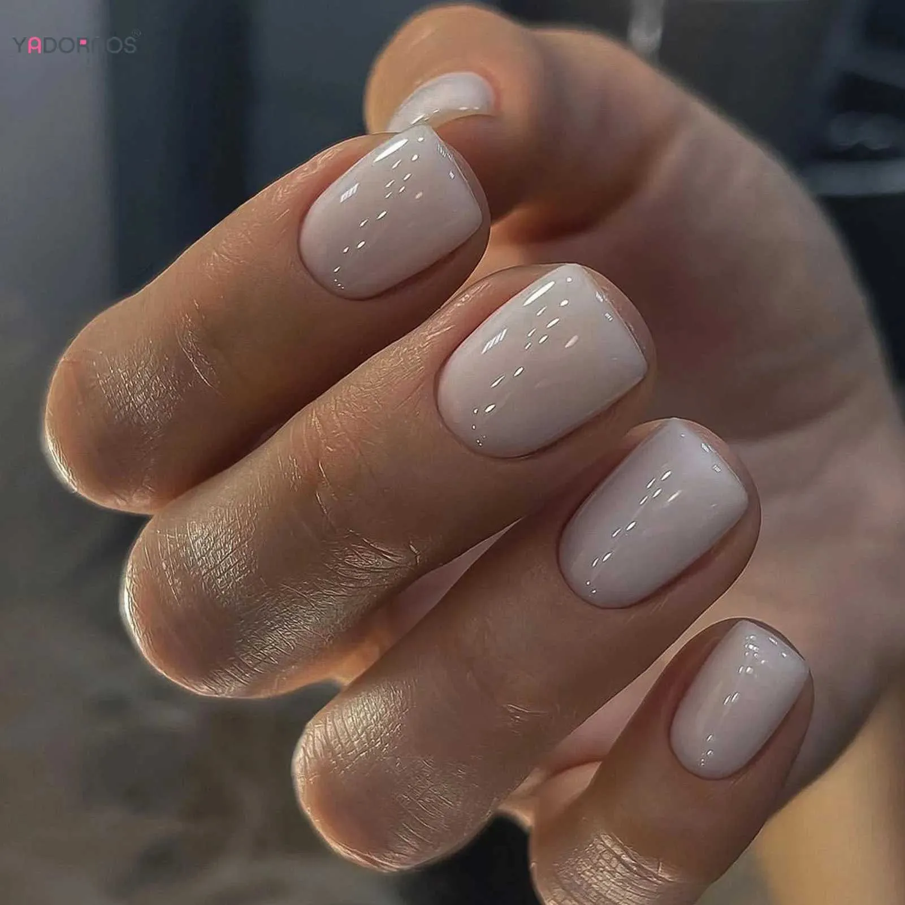
A square nail shape features straight edges and a flat tip for a clean, structured look.
Best for: long fingers and narrow nail beds.
Well suited for: office workers and administrative roles with frequent typing.
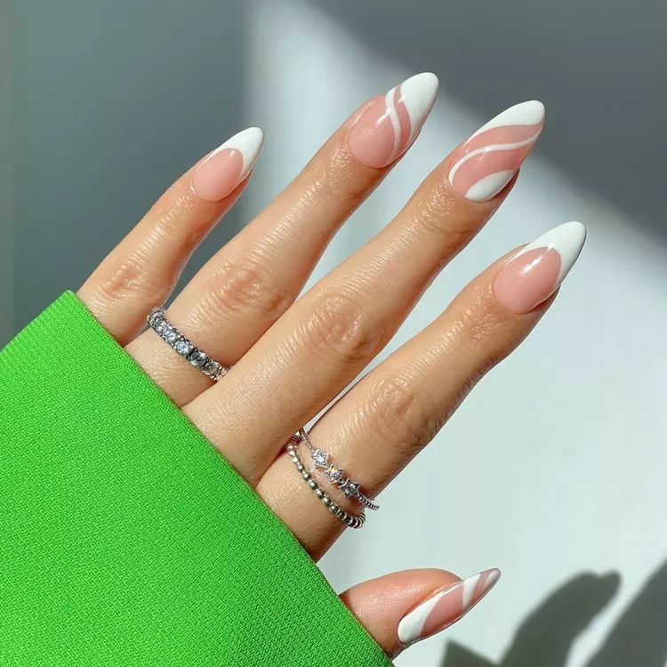
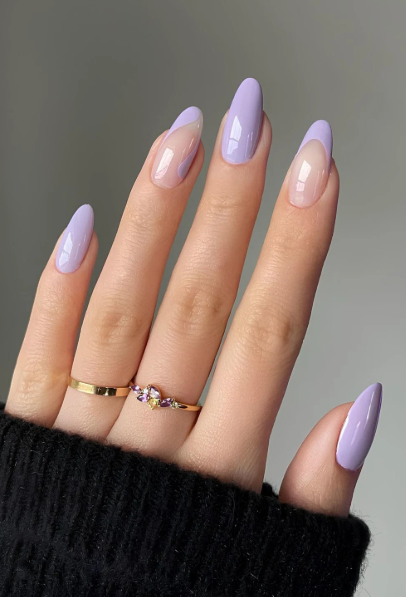
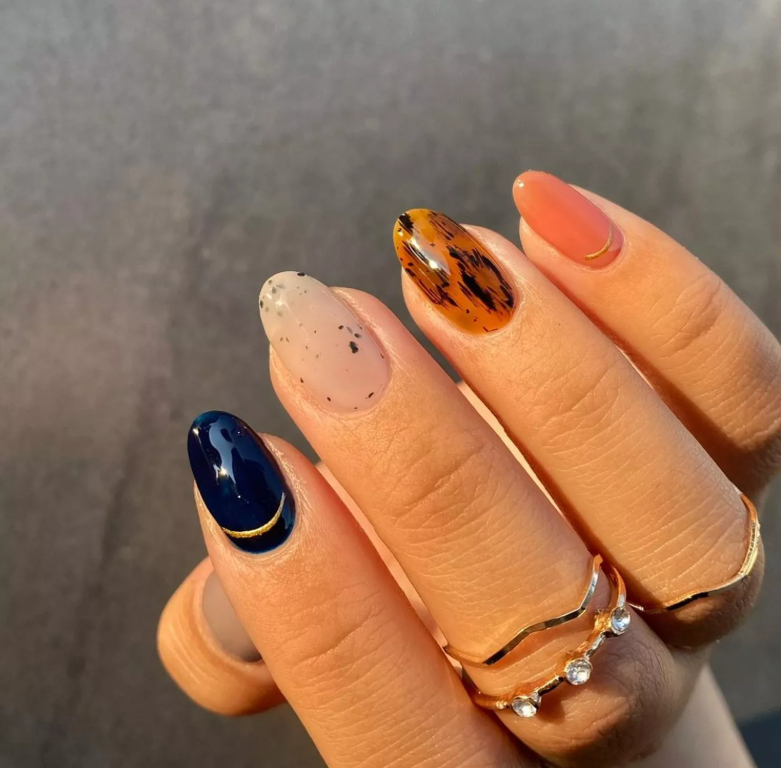
An almond nail shape tapers to a soft point, creating an elegant, elongated appearance.
Best for: short fingers or anyone wanting a lengthening effect.
Well suited for:consultants, stylists, and client‑facing professionals.
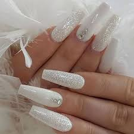
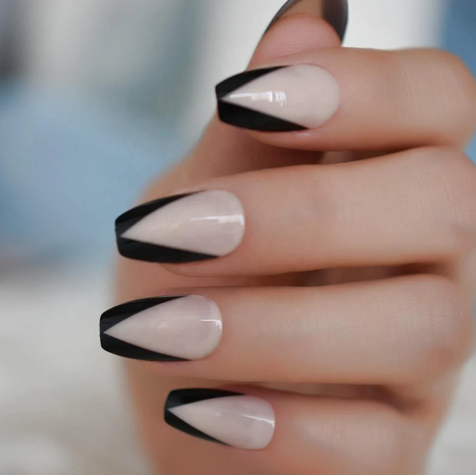
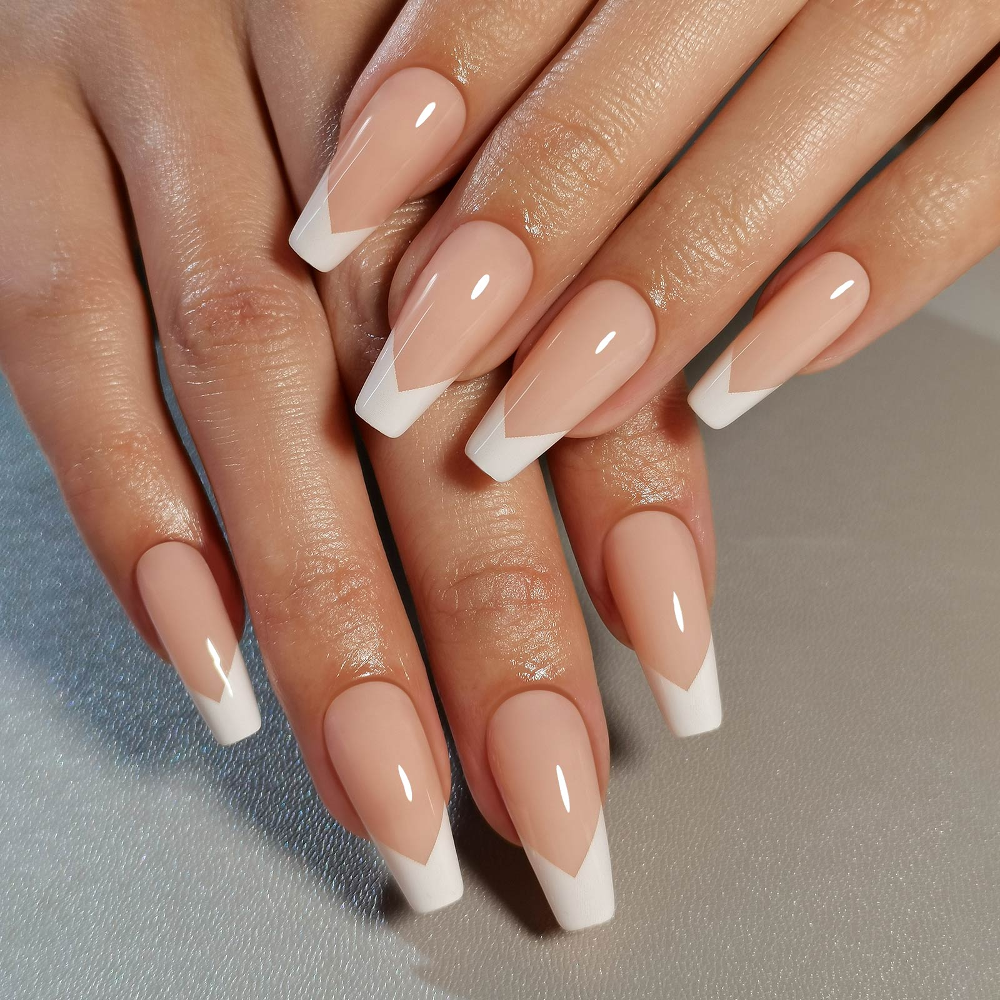
A coffin nail shape narrows toward a flat tip, offering a modern silhouette with space for design.
Best for: long fingers and strong, sturdy nail beds.
Well suited for: beauty professionals, artists, and creative industry roles.

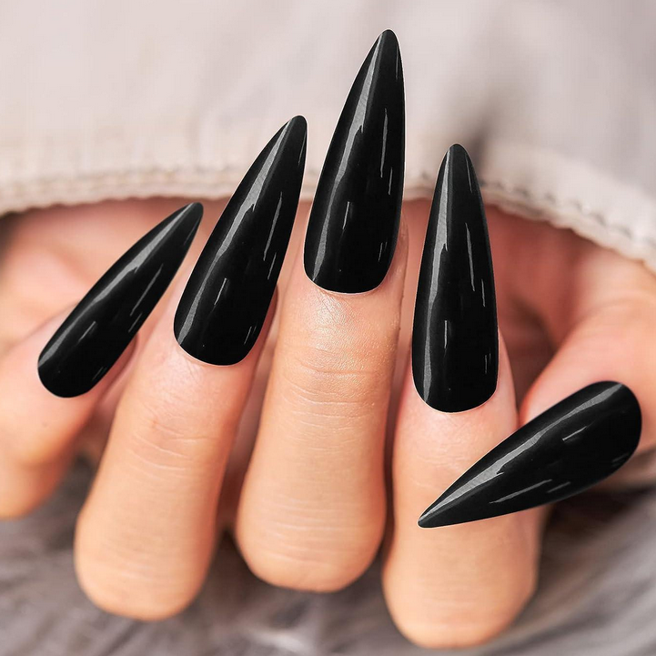
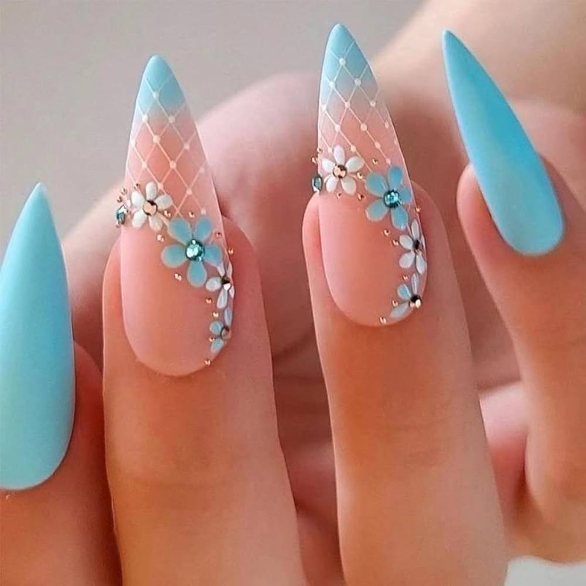
A stiletto nail shape forms a sharp, dramatic point that emphasizes bold style.
Best for: performers, influencers, and fashion‑focused professionals.
Well suited for: long fingers and thick, reinforced nails.
Go get your NAILS done girlieeee!!!
While they dry entertain your fingers with this SHOW STOPPER:
Click HERE